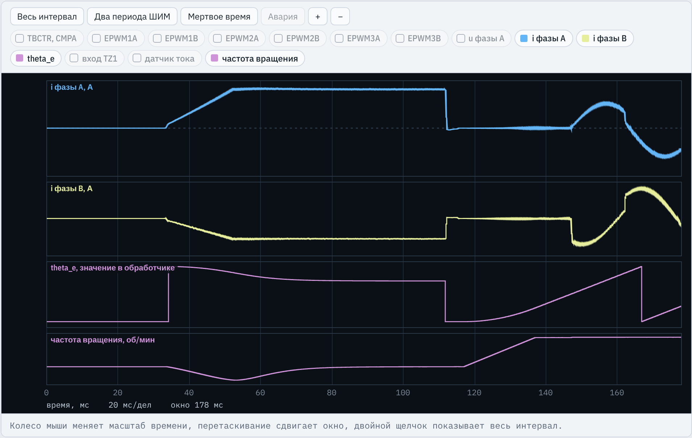
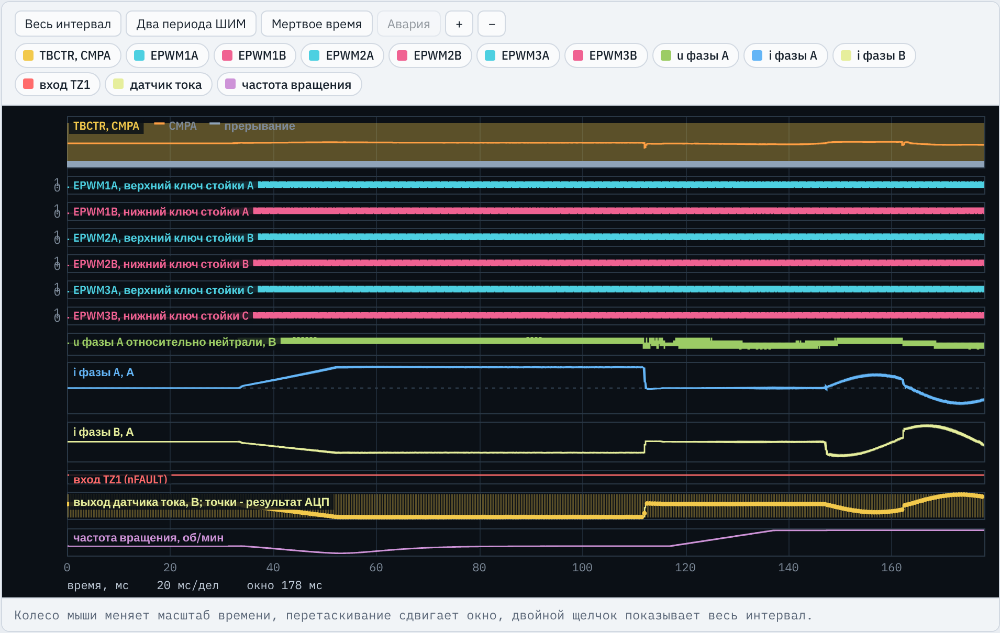
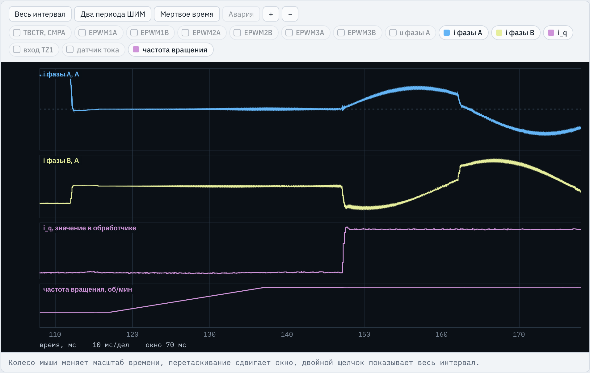
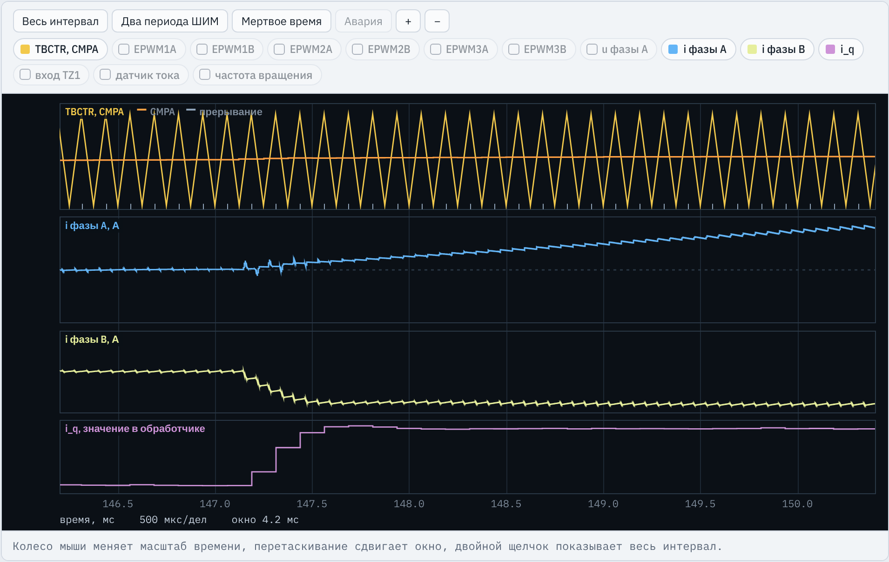
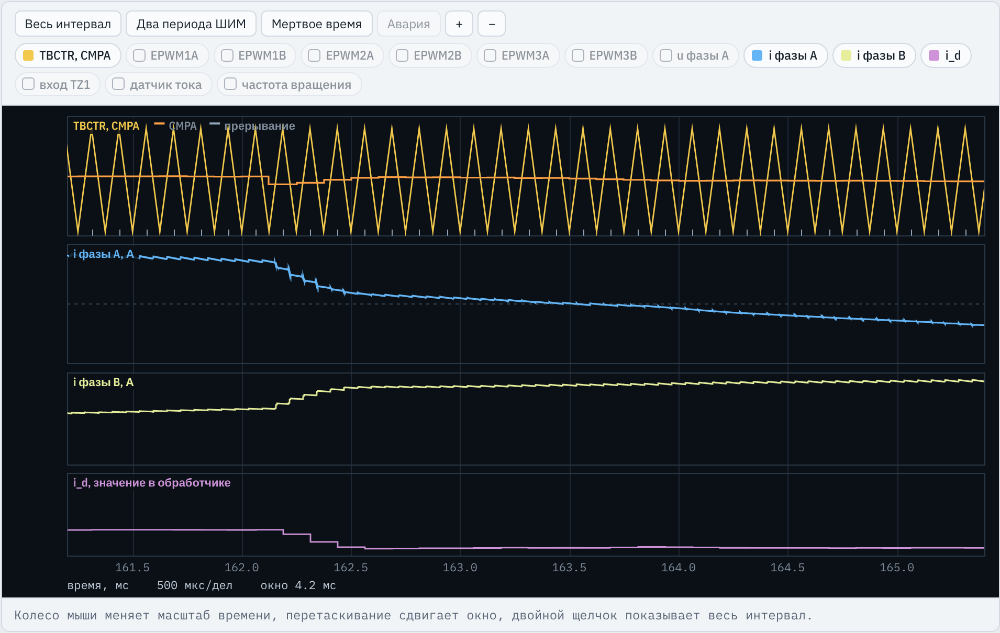

TMS320F2837xD · ЛАБОРАТОРНАЯ РАБОТА № 6
Угол ротора по энкодеру, начальная ориентация, контуры токов id и iq в системе координат ротора
Место работы в курсе
Из ЛР5: InitEPwmGpio, InitAdcA, InitEPwmLeg, PwmTrip, PwmEnable, калибровка нуля датчиков, защита по току, векторная ШИМ с компенсацией мертвого времени.
Из ЛР4: InitEQep1 — с изменением режима счета.
Стенд C2000 · ЛР6. Векторное управление СДПМ
2 / 24
Инженерная задача
СДПМ применяют в сервоприводах станков и роботов и в тяговых приводах: нужен быстрый и точный момент. Момент создает только составляющая тока, перпендикулярная оси магнитов.
При id = 0 момент пропорционален iq. Задание момента превращается в задание одного тока.
Токи фаз синусоидальны, а id, iq в установившемся режиме постоянны. ПИ-регулятор отрабатывает их без статической ошибки.
Преобразование в оси ротора требует электрического угла θe. Ошибка угла уменьшает момент и создает ложный ток id.
С ростом скорости растут ЭДС и связь осей, а напряжение ограничено звеном. Программа их компенсирует.
Результат работы: контуры токов id, iq, которые отрабатывают скачок задания за несколько периодов ШИМ при 300 и 2400 об/мин и дают расчетный момент.
Стенд C2000 · ЛР6. Векторное управление СДПМ
3 / 24
Теория
Стенд C2000 · ЛР6. Векторное управление СДПМ
4 / 24
Структура
Стенд C2000 · ЛР6. Векторное управление СДПМ
5 / 24
Что делает студент
| № | Что дано в заготовке | Что написать |
|---|---|---|
| 1 | #define данных варианта с условными значениями, KP_D … K_DT = 0.0f | данные варианта; коэффициенты регуляторов, U_LIM, K_DT |
| 2 | пустая InitEQep1() | из ЛР4: XCR = 0, QPOSMAX = ENC_Z − 1, PCRM = 1 |
| 3 | комментарий в adca1_isr() | pos, dp, оценка w_e, угол theta_e |
| 4 | th = thu = 0, idr = iqr = 0 | нарастание idr, счет al_cnt, обнуление QPOSCNT, переход в ST_RUN |
| 5 | комментарий | преобразования Кларк и Парка: i_al, i_be, i_d, i_q |
| 6 | ud = uq = 0 | ПИ-регуляторы, компенсация, ограничение, условное интегрирование |
| 7 | thu = theta_e, ua = ub = uc = 0 | поворот угла на 1,5 периода, обратные преобразования |
| 8 | da = db = dc = 0.5f | из ЛР5: добавка u0, компенсация мертвого времени, da, db, dc |
Дано полностью: main(), InitFaultInput(), интерфейсные переменные, состояния ST_CAL … ST_FAULT, запись CMPA, сброс ADCINT1 и PIEACK. Результат — протокол 10 из 10 и исследование.
Стенд C2000 · ЛР6. Векторное управление СДПМ
6 / 24
Структура программы
такты, GPIO, АЦП, eQEP1, три стойки ePWM, PIE; выходы отключены
QPOSCNT → dp, w_e, theta_e каждый период
из ЛР5: нуль датчиков за 256 периодов, |i| > Imax → авария
ориентация: θ = 0, id* = Iор; работа: θ = theta_e
Кларк, Парк, ПИ d и q, ограничение
θu, обратные преобразования, ШИМ, CMPA
Шаги 2–6 выполняются в adca1_isr() каждый период ШИМ: 125 мкс при 8 кГц. АЦП запускается при TBCTR = TBPRD.
0–32 мс: выходы отключены, нуль датчиков
32–112 мс: ток 6,5 А по оси фазы A
с 112 мс: векторное управление
защита по току или коду АЦП
Стенд C2000 · ЛР6. Векторное управление СДПМ
7 / 24
Задание 1
| Величина | Формула | Вариант 1 |
|---|---|---|
DEADBAND_TCK | tмв · 100 МГц | 1,1 мкс → 110 |
| KАЦП | знак · 3,3 / (4096 · S) | −0,01221 А на единицу кода |
| Z, импульсов на оборот | 4N | 4 · 2500 = 10 000 |
| Kpd, Kpq | Ld / 2Tμ, Lq / 2Tμ, Tμ = TШИМ | 8,80 и 10,40 В/А |
| Kid = Kiq | Rs / 2Tμ | 1800 В/(А·с) |
| Uогр | 0,96 Ud / √3 | 166,3 В |
| Nор, Kмв | Tор fШИМ, tмв fШИМ | 640; 0,0088 |
| Ошибка ориентации от трения | Mтр / (1,5 p Ψf Iор), Mтр = 0,005 Mном | 0,36° (электрических) |
| Поворот за 1,5 TШИМ при 2400 об/мин | 1,5 ωe TШИМ | 13,5° |
| Напряжение при 3000 об/мин и Im | √(ud2 + uq2) при id = 0 | 91,6 В < Uогр |
Стенд C2000 · ЛР6. Векторное управление СДПМ
8 / 24
Задание 1
lr6_reference.c, определения
#define POLE_P 5 // число пар полюсов #define ENC_LINES 2500 // число штрихов энкодера #define L_D 2.20e-3f // индуктивность по оси d, Гн #define PSI_F 0.0520f // потокосцепление магнитов, Вб
Из таблиц варианта, в единицах СИ: мГн записываются как e-3f
#define ENC_Z (4L * ENC_LINES) // импульсов на оборот, XCR = 0 #define K_TH (TWO_PI / ENC_Z) // радиан на импульс
Счет обоих фронтов обоих каналов: 4N. 4L — целый тип long для арифметики положения
#define KP_D (L_D / (2.0f * T_MU)) // технический оптимум
#define KP_Q (L_Q / (2.0f * T_MU))
#define KI_D (R_S / (2.0f * T_MU))Как в ЛР3, но для каждой оси свою индуктивность: Kpd = 8,8, Kpq = 10,4 В/А
#define U_LIM (0.96f * UD * SQRT3_INV) // граница линейного режима векторной ШИМ #define K_W (TS / 1.0e-3f) // фильтр оценки скорости, 1 мс #define N_AL ((Uint32)(T_AL * FSW_HZ))
Граница линейной векторной ШИМ с запасом 4 %; фильтр скорости Tф = 1 мс; 640 периодов ориентации
Стенд C2000 · ЛР6. Векторное управление СДПМ
9 / 24
Задание 2
lr6_reference.c, InitEQep1()
EQep1Regs.QDECCTL.bit.QSRC = 0; // квадратурный декодер EQep1Regs.QDECCTL.bit.XCR = 0; // счет фронтов обоих каналов: 4N импульсов на оборот
Из ЛР4. XCR = 0: 10 000 отсчетов на оборот, разрешение 0,036° механических
EQep1Regs.QPOSMAX = ENC_Z - 1; // счетчик в пределах одного оборота
EQep1Regs.QPOSINIT = 0;QPOSCNT от 0 до 9999; при вращении назад после 0 получается 9999. QPOSINIT — значение для программного обнуления
EQep1Regs.QEPCTL.bit.PCRM = 1; // сброс по достижении QPOSMAX
EQep1Regs.QEPCTL.bit.QPEN = 1;
EQep1Regs.QEPCTL.bit.SWI = 1;PCRM = 1 — счетчик повторяет один оборот, угол не накапливается. QPEN включает модуль, SWI загружает QPOSINIT
Отличие от ЛР4: блок захвата не нужен, нужен режим сброса по QPOSMAX. Ошибка XCR = 1: угол растет вдвое медленнее истинного, не проходят И4–И7.
Стенд C2000 · ЛР6. Векторное управление СДПМ
10 / 24
Задание 3
lr6_reference.c, adca1_isr(), начало
pos = EQep1Regs.QPOSCNT; dp = (int32)pos - (int32)pos_prev;
Положение в момент прерывания и приращение за период. Приведение к int32: разность может быть отрицательной
if (dp > ENC_Z / 2) dp -= ENC_Z; else if (dp < -ENC_Z / 2) dp += ENC_Z; pos_prev = pos;
Переход счетчика через 0: скачок 9999 → 0 превращается в +1. За период ротор поворачивается много меньше полуоборота
w_e += K_W * ((float)dp * K_TH * POLE_P / TS - w_e);
Электрическая скорость, рад/с, по формуле (7) с фильтром 1 мс. Один импульс за период — 25 рад/с, без фильтра оценка ступенчатая
theta_e = (float)((pos * POLE_P) % ENC_Z) * K_TH;
θe = (2π/Z)·[(p·x) mod Z] в целых числах: точно и без накопления погрешности. pos · 5 ≤ 49 995
Стенд C2000 · ЛР6. Векторное управление СДПМ
11 / 24
Задание 4
Инкрементальный энкодер не знает положения при включении. Постоянный ток по оси фазы A поворачивает ось магнитов к этой оси; там счетчик обнуляется.
lr6_reference.c, adca1_isr(), состояние ST_ALIGN
th = 0.0f; thu = 0.0f; idr = I_AL * fminf(1.0f, (float)al_cnt / (0.25f * N_AL)); iqr = 0.0f;
Угол 0 — ток только по оси α (фаза A). Нарастание за четверть Tор (20 мс) уменьшает толчок
if (++al_cnt >= N_AL)
{
EQep1Regs.QEPCTL.bit.SWI = 1; // QPOSCNT = 0: ось d совпадает с осью фазы AЧерез 640 периодов (80 мс) ротор успокоился: текущее положение принимается за θe = 0
pos_prev = 0;
w_e = 0.0f;
x_d = 0.0f; x_q = 0.0f;
state = ST_RUN;
}Без pos_prev = 0 первое dp дало бы ложный скачок скорости. Интегралы сбрасываются, чтобы работа началась с нуля
Стенд C2000 · ЛР6. Векторное управление СДПМ
12 / 24
Осциллограмма

i фазы A, i фазы B — токи двигателя, А. 32–52 мс ток нарастает, до 112 мс постоянен: ia = 6,5 А, ib = ic = −3,25 А
theta_e — переменная программы, 0…2π. Скачок к 2π при 34 мс: ротор пошел назад, счетчик перешел через 0
частота вращения — об/мин: ротор поворачивается назад и останавливается к 80 мс
theta_e остановился около 265° = 360° − 94,5°. При 112 мс SWI обнуляет счетчик, θe = 0. После разгона (117–137 мс) угол нарастает, при 167 мс переходит через 2π.
Стенд C2000 · ЛР6. Векторное управление СДПМ
13 / 24
Задание 5
lr6_reference.c, adca1_isr()
i_al = i_a; i_be = (i_a + 2.0f * i_b) * SQRT3_INV;
Формула (3): сохранение амплитуды и ia + ib + ic = 0, поэтому достаточно двух датчиков. Множитель 1/√3 обязателен
c = cosf(th); s = sinf(th);
Синус и косинус считаются один раз за период. th = 0 при ориентации, theta_e при работе
i_d = i_al * c + i_be * s; i_q = -i_al * s + i_be * c;
Формула (4): поворот на −θe. В установившемся режиме id, iq постоянны, хотя токи фаз синусоидальны
Без 1/√3 вектор тока искажается: перерегулирование 17,9 % в И5 и момент +6,2 % в И7. Неверный знак в Парке приводит к срабатыванию защиты.
Стенд C2000 · ЛР6. Векторное управление СДПМ
14 / 24
Задание 6
lr6_reference.c, adca1_isr()
ed = idr - i_d; eq = iqr - i_q;
Ошибки по осям; idr, iqr — задания (при работе это id_ref, iq_ref)
ud = KP_D * ed + x_d - w_e * L_Q * i_q; uq = KP_Q * eq + x_q + w_e * (L_D * i_d + PSI_F);
Формула (10): ПИ плюс компенсация перекрестных связей и ЭДС. Контуры становятся независимыми звеньями 1/(Rs + Ls)
um = sqrtf(ud * ud + uq * uq);
if (um > U_LIM)
{
k = U_LIM / um; ud *= k; uq *= k;Ограничение амплитуды вектора 166,3 В пропорционально: направление вектора сохраняется
}
else
{
x_d += KI_D * TS * ed;
x_q += KI_Q * TS * eq;
}Условное интегрирование: при ограничении интегралы не растут, нет затянутого перерегулирования
Стенд C2000 · ЛР6. Векторное управление СДПМ
15 / 24
Задания 7 и 8
lr6_reference.c, adca1_isr()
thu = theta_e + 1.5f * w_e * TS; // поворот за время задержки ШИМНапряжение действует со следующего периода, в среднем через 1,5 TШИМ. При 2400 об/мин это 13,5°
c = cosf(thu); s = sinf(thu); ua = ud * c - uq * s; ub = 0.5f * (-ua + 1.7320508f * (ud * s + uq * c)); uc = -ua - ub;
Формула (5): обратный Парк дает uα = ua и uβ, обратный Кларк — ub, uc
umax = fmaxf(ua, fmaxf(ub, uc));
umin = fminf(ua, fminf(ub, uc));
u0 = -0.5f * (umax + umin);
// ...
da = 0.5f + (ua + u0) / UD + K_DT * sa;Из ЛР5 без изменений: добавка нулевой последовательности (векторная ШИМ) и компенсация мертвого времени Kмв = 0,0088
EPwm1Regs.CMPA.bit.CMPA = (Uint16)(da * TBPRD_VAL);
Дано в заготовке; то же для ePWM2 и ePWM3. Новое значение загружается при TBCTR = 0
Стенд C2000 · ЛР6. Векторное управление СДПМ
16 / 24
Осциллограмма

TBCTR, CMPA — счетчик и уставка ePWM1; при таком масштабе видна только CMPA
EPWM1A … EPWM3B — сигналы шести ключей
u фазы A — напряжение фазы A относительно нейтрали, В
i фазы A, i фазы B — токи двигателя, А
вход TZ1 — nFAULT: высокий уровень, аварии нет
датчик тока — выход датчика фазы A, В: убывает при токе в двигатель; точки — АЦП
частота вращения — об/мин
0–32 мс калибровка, 32–112 мс ориентация, 117–137 мс разгон до 300 об/мин, 147 мс скачок iq* до 4,1 А, 162 мс скачок id* до −2,4 А.
Стенд C2000 · ЛР6. Векторное управление СДПМ
17 / 24
Осциллограмма

i фазы A, i фазы B — токи двигателя, А; после 147 мс — синусоиды 25 Гц
i_q — переменная программы, А: ступенька 0 → 4,1 А при 147 мс и далее постоянна
частота вращения — об/мин: разгон 117–137 мс, затем 300 об/мин
Регулятор видит постоянную величину, хотя токи фаз меняются по синусоиде. При 162 мс скачок id* меняет амплитуду и фазу токов фаз, а iq остается прежним: оси развязаны.
Стенд C2000 · ЛР6. Векторное управление СДПМ
18 / 24
Осциллограмма

TBCTR, CMPA — счетчик ePWM1, период 125 мкс; отметки внизу — прерывания
i фазы A, i фазы B — токи двигателя, А
i_q — значение в обработчике, А: одна ступенька на период
Задание меняется при 147,0 мс, iq начинает расти около 147,2 мс — задержка ШИМ. Ток достигает задания примерно за 4 периода, перерегулирование мало. Требование И5: до 0,9 задания не более 625 мкс, перерегулирование не более 10 %.
Стенд C2000 · ЛР6. Векторное управление СДПМ
19 / 24
Осциллограмма

TBCTR, CMPA — уставка CMPA ступенькой уменьшается при 162,2 мс
i фазы A, i фазы B — токи двигателя, А: ia уменьшается, ib растет
i_d — значение в обработчике, А: от 0 до −2,4 А за 3–4 периода
Контур оси d настроен на тот же технический оптимум с Kpd = Ld/2Tμ. При Ld < Lq отрицательный id добавляет небольшой реактивный момент, около 0,03 Н·м.
Стенд C2000 · ЛР6. Векторное управление СДПМ
20 / 24
Приемочные испытания
| № | Что проверяется | Требование | Зачем |
|---|---|---|---|
| И1 | ШИМ трех стоек | 8 кГц ± 0,1 %, счетчики синхронны, мертвое время 1,1–1,3 мкс, нет сквозного тока | основа из ЛР5 |
| И2 | Измерение токов фаз | запуск при TBCTR = TBPRD, ADCINA3 и ADCINA4, окно ≥ 135 нс; погрешность ≤ 0,5 % и 2 % от 25 А | ошибка тока — ошибка момента |
| И3 | Подключение энкодера | QPOSMAX = 9999, XCR = 0, угол растет при положительном вращении | масштаб и направление угла |
| И4 | Ориентация и угол | после ориентации θe = 0 ± 3°; ошибка theta_e: средняя ≤ 1,5°, наибольшая ≤ 4° | без точного угла нет ориентации |
| И5 | Контуры тока, 300 об/мин | iq: 0 → 4,1 А, id: 0 → −2,4 А; перерегулирование ≤ 10 %, t0,9 ≤ 625 мкс, ошибка ≤ 2 % Im | настройка регуляторов |
| И6 | Контуры тока, 2400 об/мин | iq: 0 → 8,2 А, t0,9 ≤ 632 мкс; отклонение id ≤ 12 % Im; при разгоне токи ≤ 10 % Im | компенсация связей, ЭДС, задержки |
| И7 | Момент | при iq = 8,2 А момент 3,198 Н·м ± 3 % | итоговый результат привода |
| И8 | Сигнал nFAULT | шесть ключей закрыты ≤ 0,2 мкс и остаются закрытыми | аппаратная защита TZ1 |
| И9 | Включение выходов | отключены при калибровке, включены до 33 мс, ложных отключений нет | нуль датчиков без тока |
| И10 | Правила программирования | EALLOW/EDIS, сброс ADCINT1, PIEACK, переменные id_ref, iq_ref, theta_e, i_d, i_q | работа на реальном кристалле |
Стенд C2000 · ЛР6. Векторное управление СДПМ
21 / 24
Типовые ошибки
| Ошибка в программе | Не проходят | Что видно (вариант 1) |
|---|---|---|
| Нет компенсации перекрестных связей | И6 | отклонение id 2,86 А при допуске 0,98 А |
| Нет компенсации ЭДС | И6 | ток при разгоне нагрузочной машиной 1,80 А |
Нет поворота угла thu | И6 | отклонение id 1,88 А |
| Нет начальной ориентации | И4–И7 | угол после ориентации 94,5°, момент −106,8 % |
| Неверный знак в преобразовании Парка | И2, И5–И7, И9 | срабатывает защита по току |
| Кларк без множителя 1/√3 | И5–И7 | перерегулирование 17,9 %, момент +6,2 % |
Счет фронтов одного канала, XCR = 1 | И4–И7 | ошибка угла до 180°, iq не достигает задания |
| Не учтено число пар полюсов в угле | И4–И7 | ошибка угла до 180°, момент −176 % |
Три первые ошибки проверка И5 при 300 об/мин не выявляет: компенсируемые слагаемые пропорциональны скорости. Их выявляет только И6 при 2400 об/мин.
Стенд C2000 · ЛР6. Векторное управление СДПМ
22 / 24
Исследование
Без перекрестных связей: отклонение id 2,86 А.
Без поворота угла: 1,88 А.
Без ЭДС: ток при разгоне 1,80 А; оценка 0,052 · 62 800 / 1800 = 1,8 А.
Допуск И6: 0,98 А.
Стенд C2000 · ЛР6. Векторное управление СДПМ
23 / 24
Порядок выполнения
theta_e, w_e; проверить угол на осциллографеi_d, i_q, скачок отрабатывается за несколько периодовСтенд C2000 · ЛР6. Векторное управление СДПМ
24 / 24